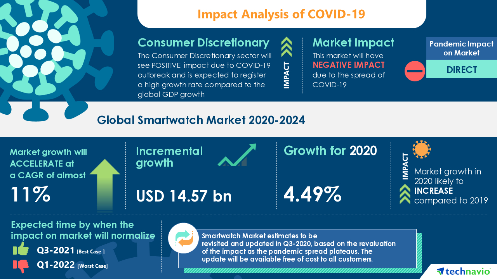

Impact of Technology on Consumer Trends in Watch Industry
-Jan 12, 2025
The advancement of modern technology has caused changes in every aspect of our life. With brand
new innovations that were believed to be impossible, every industry has seen major evolution in
their product standards and as well as the expectations and trends of their consumers. Among the
various industries, the watch industry is one of the industries which has been revolutionized by
technological advancements. With the development of more tech-savvy with exciting new features
to the traditional watches blending with the modern features all to cater the need of modern
consumers.
Smart watches with their modern features have led to a new consumer base of tech enthusiasts who
like their watches with more features than just time. And with rapid improvement in smart
watches the trend is only growing. Smart watches have evolved from watches with quirky tech
features to a useful day-to-day product. With their advancement with health features like
heartbeat tracker, fitness tracing, sleep monitoring has made them a lifestyle-oriented product.
Their focus on functionality has led them to be a competitor to traditional luxury watches. With
their affordable price range, they have garnered broad appeal.
While smart watches have led many consumers to shift from traditional watches, some previous
consumers of traditional have doubled down or younger demographic have discovered the simplicity
of a watch which only tells time. With the ever-increasing use of tech, people have rediscovered
the joys of simple traditional watches. Consumers who want to take a break from overuse of
modern technology are increasing and returning to traditional options. What they want is watch
that tells time and nothing else. Simply, no matter how many features or customizable design a
smartwatch can have, it is not elegant enough for consumers who prefer craftmanship. While
smartwatches might have the features, consumers desire the elegance, simplicity and nostalgia
offered by the traditional options.
E-commerce and digital marketing have changed how companies attract consumers. With the wide
range offered by e-commerce, manufacturers have been able to reach the global consumer market
with ease. With the new broad reach many new niches watch types also have found their consumers.
With the use of AR for virtual try-ons it has made consumer shopping experience easier. And to
attract the consumer, digital marketing is the vital tool for manufacturers. With the internet
have come new forms of marketing. from showing personalized ads to consumers to sponsoring
influence trusted by people, it has made getting consumer easier than ever before.
With concern for environment, many new watch manufacturers have entered the market providing
more eco-friendly options. They cater to those consumers who are themselves aware of the need
for eco-friendly options. For sustainability, manufactures now days follow practices such as
using recycled material, reducing packaging waste and ethically sourcing their raw materials.